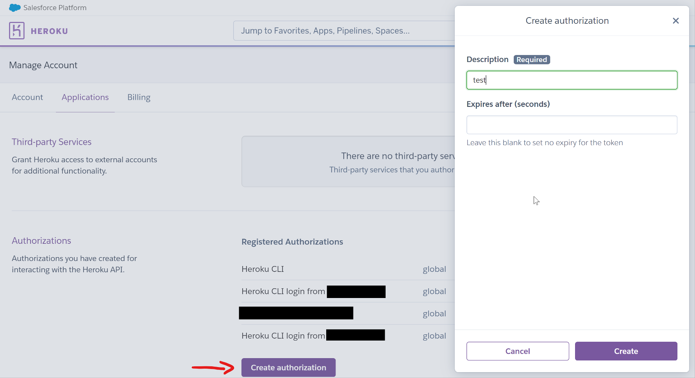
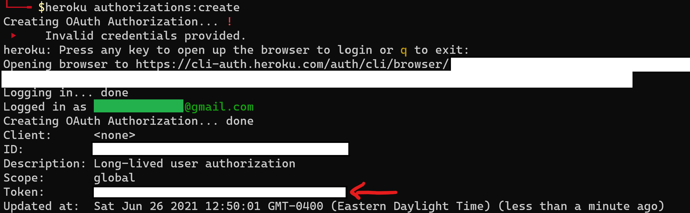

👉 This article is also published on Towards Data Science blog.
In this post, you will learn how to …
- Deploy a free PostgreSQL database in Heroku
- Generate a Heroku API token (in two ways)
- Dynamically retrieve Heroku database URL (useful to overcome a shortcoming of the free plan)
- Ingest data to a table in the database using Pandas and SQLAlchemy
- Specify data type of columns in the table using SQLAlchemy datatypes
Prerequisite
You will need the following Python libraries
And also
- Heroku CLI (verify your installation by entering
heroku --versionin the terminal)
Heroku Signup and Deployment
Heroku is a platform as a service (PaaS) that enables developers to build and run applications entirely in the cloud. Heroku offers a ready-to-use environment that makes it very simple to deploy your code as quickly as possible with little development experience. This is an excellent choice for beginners and small to medium-sized companies, unlike AWS, which usually requires experienced developers and has complicated deployment processes.
1. Sign up to Heroku & Deploy Your First PostgreSQL Database
You can signup for free to Heroku. After signing up and logging into your account, you will be directed to the Heroku Dashboard. Then, you can follow the instructions in the following clip to create a new app and add a PostgreSQL database.
The free plan allows you to have a maximum of 20,000 rows of data and up to 20 connections to the database. This plan is usually enough for a small personal project.
In the free plan, the database credentials will occasionally change since Heroku rotates credentials periodically and sometimes perform maintenances.
To address the issue of occasional changes in the database credentials, we can use Heroku CLI to retrieve the database URL dynamically. But first, let’s go over the procedure for logging in to your account via Heroku CLI.
2. Access your Heroku account using Token
What’s covered in this section is applicable in general for working with any Heroku applications through Heroku CLI.
2.1. Generate a Heroku API Token
You can generate the token in the following two ways:
2.1.1. Heroku account (browser)
Go to Account settings → Applications. Under the Authorizations section, click on Create authorization. You have to give a description in the opened window and set the expiry time or just set no expiry for the token (by leaving the box blank).

2.1.2. Heroku CLI (terminal)
After installing the Heroku CLI, the first time you try to use a command that requires access to your account, you will be prompted to log in to your Heroku account on your browser. Once you’re logged in, you can do almost anything through the Heroku API. For example, we can create a token by running the following:
$heroku authorization:createThe above command will generate a long-lived token for you. The first time you run the above command, you will be prompted to log in to your account in a browser. Once you successfully log into your account, you can get back to the terminal and see the generated token, as shown below.

2.2. Store your Heroku token in your environment
Now that you have your Heroku API token, you need to set it in your terminal/environment as HEROKU_API_KEY. You can achieve this by running the following in your terminal:
export HEROKU_API_KEY=<your_token>A variable set in the shell terminal will only be available in the terminal from which you ran and will die after closing it. Instead, you can put above command in your ~/.bash or ~/.bashrc file so that the variable will be available in any new terminal you open. This way, you don’t need to worry about setting this variable again!
Once you have HEROKU_API_KEY variable set in your terminal, you no longer need to use the web-based authentication or username and password to log in. This is particularly important if you want to use Heroku CLI as a part of an automation process or CI/CD. This way, you don’t need to log in each time and use the token in any different terminals.
2.3 Retrieve Heroku PostgreSQL Database URL
You can get the database URL by running the following command:
$heroku config:get DATABASE_URL --app <your-app-name>This will output the database URL in the format of
postgres://<db_user>:<db_password>@<db_host>/<db_name>
We can use Python’s standard library subprocess to run above command and retrieve the database credentials. This way we will have all our codes in Python!
import subprocess
heroku_app_name = "your-app-name"
raw_db_url = subprocess.run(
["heroku", "config:get", "DATABASE_URL", "--app", heroku_app_name],
capture_output=True # capture_output arg is added in Python 3.7
).stdout Your Python (iPython) terminal/environment should have HEROKU_API_KEY set. You can verify that by running os.environ["HEROKU_API_KEY"] and verifying the token in the output.
Data Ingestion to a Table
Create SQLAlchemy Engine
Before we ingest data to a table in the deployed PostgreSQL database using Pandas, we have to create an SQLAlchemy engine that will be passed to the Pandas method. The SQLAlchemy engine/connection can be created using the following code snippet:
import subprocess
from sqlalchemy.engine.create import create_engine
# Get the Database URL using Heroku CLI
# -------------------------------------
# Running the following from Python: $heroku config:get DATABASE_URL --app your-app-name
heroku_app_name = "your-app-name"
# Assumption: HEROKU_API_KEY is set in your terminal
# You can confirm that it's set by running the following python command os.environ["HEROKU_API_KEY"]
raw_db_url = subprocess.run(
["heroku", "config:get", "DATABASE_URL", "--app", heroku_app_name],
capture_output=True # capture_output arg is added in Python 3.7
).stdout
# Convert binary string to a regular string & remove the newline character
db_url = raw_db_url.decode("ascii").strip()
# Convert "postgres://<db_address>" --> "postgresql+psycopg2://<db_address>" needed for SQLAlchemy
final_db_url = "postgresql+psycopg2://" + db_url.lstrip("postgres://") # lstrip() is more suitable here than replace() function since we only want to replace postgres at the start!
# Create SQLAlchemy engine
# ------------------------
engine = create_engine(final_db_url)As you may note in the above, some string manipulation is required before creating the SQLAlchemy engine.
Ingest Data using Pandas & SQLAlchemy
We can ingest the data into a table by simply using pandas to_sql() function and passing the SQLAlchemy engine/connection object to it.
import pandas as pd
from sqlalchemy.types import Integer, DateTime
DATA_URL = "https://raw.githubusercontent.com/owid/covid-19-data/master/public/data/latest/owid-covid-latest.csv"
df = pd.read_csv(DATA_URL)
df.to_sql(
"covid19", # table name
con=engine,
if_exists='replace',
index=False, # In order to avoid writing DataFrame index as a column
dtype={
"last_updated_date": DateTime(),
"total_cases": Integer(),
"new_cases": Integer()
}
)In the above example, the data type of few columns is specified. You can determine the dtype of columns by passing a dictionary in which keys should be the column names and the values should be the SQLAlchemy types. For all available dtypes, you can check SQLAlchemy documentation for the data types it supports.
Additional Tips
Reading data into a Pandas dataframe using pandas read_sql_table().
df = pd.read_sql_table(
"covid19", # table name
con=engine
)You can run raw SQL queries using SQLAlchemy’s .execute("<your SQL query>") function. For instance, if you want to drop the above table by running a SQL query, you can do so by doing the following:
engine.execute("DROP TABLE covid19") Above will create an SQLAlchemy cursor.
Conclusion
In this post, we deployed a free PostgreSQL database using Heroku free plan. We also addressed the issue of changing database credentials by Heroku in the free plan by retrieving the database credentials dynamically via Heroku CLI. Using Pandas’ to_sql() function, we quickly created a table and even specified data types of columns via SQLAlchemy data types.
Useful Links
Citation
@online{alizadeh2021,
author = {Esmaeil Alizadeh},
title = {Step-by-Step {Deployment} of a {Free} {PostgreSQL} {Database}
{And} {Data} {Ingestion}},
date = {2021-06-26},
url = {https://new.ealizadeh.com/blog/deploy-postgresql-db-heroku},
langid = {en}
}